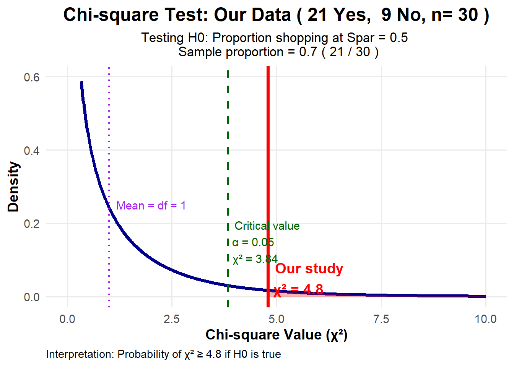

# Corrected Simulation for Our Actual Data
# Testing if proportion shopping at Spar is different from some value
# Load required library
library(ggplot2)
# Our actual data
actual_no <- 9 # 9 students don't shop at Spar
actual_yes <- 21 # 21 students shop at Spar
n_students <- actual_no + actual_yes # Total = 30
# Null hypothesis proportion (adjust this as needed for Our test)
# Common tests: p = 0.5 (50%), or p = 0.6 (60%), etc.
# You need to specify what you're testing against!
p_null <- 0.5 # Example: testing if proportion = 50%
# Calculate expected frequencies under H₀
expected_yes <- n_students * p_null
expected_no <- n_students * (1 - p_null)
# Calculate Our actual chi-square statistic
actual_chi2 <- (actual_yes - expected_yes)^2 / expected_yes +
(actual_no - expected_no)^2 / expected_no
# Theoretical p-value
p_value_theoretical <- pchisq(actual_chi2, df = 1, lower.tail = FALSE)
# Create data for theoretical chi-square(1) distribution
x <- seq(0, 10, length.out = 1000) # Reasonable range for n=30
y <- dchisq(x, df = 1)
# Create data frame
theory_data <- data.frame(x = x, y = y)
# Calculate area in tail (for shading)
tail_data <- data.frame(x = seq(actual_chi2, 10, length.out = 100))
tail_data$y <- dchisq(tail_data$x, df = 1)
# Plot: Theoretical chi-square(1) distribution
p <- ggplot(theory_data, aes(x = x, y = y)) +
# Plot the theoretical distribution
geom_line(color = "darkblue", linewidth = 1.5) +
# Shade the tail area (p-value region)
geom_area(data = tail_data, aes(x = x, y = y),
fill = "red", alpha = 0.3) +
# Add vertical line for Our actual result
geom_vline(xintercept = actual_chi2,
color = "red",
linewidth = 1.5,
linetype = "solid") +
# Add critical value at α = 0.05
geom_vline(xintercept = qchisq(0.95, df = 1),
color = "darkgreen",
linewidth = 1,
linetype = "dashed") +
# Add mean of distribution (df = 1)
geom_vline(xintercept = 1,
color = "purple",
linewidth = 0.8,
linetype = "dotted") +
# Annotations
annotate("text", x = actual_chi2, y = 0.05,
label = paste("Our study\nχ² =", round(actual_chi2, 2)),
color = "red", size = 5, hjust = -0.1, fontface = "bold") +
annotate("text", x = qchisq(0.95, df = 1), y = 0.15,
label = paste("Critical value\nα = 0.05\nχ² =",
round(qchisq(0.95, df = 1), 2)),
color = "darkgreen", size = 4, hjust = -0.1) +
annotate("text", x = 1, y = 0.25,
label = paste("Mean = df = 1"),
color = "purple", size = 4, hjust = -0.1) +
annotate("text", x = -1, y = 0.02,
label = paste("p-value =",
round(p_value_theoretical, 4)),
color = "red", size = 5, fontface = "bold") +
# Labels and theme
labs(title = paste("Chi-square Test: Our Data (", actual_yes, "Yes, ",
actual_no, "No, n=", n_students, ")"),
subtitle = paste("Testing H0: Proportion shopping at Spar =", p_null, "\n",
"Sample proportion =", round(actual_yes/n_students, 3),
"(", actual_yes, "/", n_students, ")"),
x = "Chi-square Value (χ²)",
y = "Density",
caption = paste("Interpretation: Probability of χ² ≥", round(actual_chi2, 2),
"if H0 is true")) +
theme_minimal(base_size = 14) +
theme(
plot.title = element_text(face = "bold", size = 18, hjust = 0.5),
plot.subtitle = element_text(size = 13, hjust = 0.5),
plot.caption = element_text(size = 11, hjust = 0),
axis.title = element_text(face = "bold"),
panel.grid.minor = element_blank()
) +
xlim(0, 10) +
ylim(0, 0.6)
# Print the plot
print(p)Warning: Removed 1 row containing missing values or values outside the scale range
(`geom_text()`).
# Print summary information
cat("=====================================================\n")=====================================================cat("CHI-SQUARE GOODNESS-OF-FIT TEST\n")CHI-SQUARE GOODNESS-OF-FIT TESTcat("=====================================================\n\n")=====================================================cat("Our DATA:\n")Our DATA:cat("- Yes (shop at Spar):", actual_yes, "\n")- Yes (shop at Spar): 21 cat("- No (don't shop): ", actual_no, "\n")- No (don't shop): 9 cat("- Total: ", n_students, "\n")- Total: 30 cat("- Sample proportion: ", round(actual_yes/n_students, 3),
" (", actual_yes, "/", n_students, ")\n\n")- Sample proportion: 0.7 ( 21 / 30 )cat("NULL HYPOTHESIS:\n")NULL HYPOTHESIS:cat("- H₀: p =", p_null, "\n")- H₀: p = 0.5 cat("- H₁: p ≠", p_null, "\n\n")- H₁: p ≠ 0.5 cat("EXPECTED FREQUENCIES UNDER H₀:\n")EXPECTED FREQUENCIES UNDER H₀:cat("- Expected Yes: ", n_students, "×", p_null, "=", expected_yes, "\n")- Expected Yes: 30 × 0.5 = 15 cat("- Expected No: ", n_students, "× (1-", p_null, ") =", expected_no, "\n\n")- Expected No: 30 × (1- 0.5 ) = 15 cat("CHI-SQUARE CALCULATION:\n")CHI-SQUARE CALCULATION:cat("1. For 'Yes' category:\n")1. For 'Yes' category:cat(" (O-E)²/E = (", actual_yes, "-", expected_yes, ")²/", expected_yes,
" = ", round((actual_yes - expected_yes)^2, 2), "/", expected_yes,
" = ", round((actual_yes - expected_yes)^2/expected_yes, 3), "\n\n") (O-E)²/E = ( 21 - 15 )²/ 15 = 36 / 15 = 2.4 cat("2. For 'No' category:\n")2. For 'No' category:cat(" (O-E)²/E = (", actual_no, "-", expected_no, ")²/", expected_no,
" = ", round((actual_no - expected_no)^2, 2), "/", expected_no,
" = ", round((actual_no - expected_no)^2/expected_no, 3), "\n\n") (O-E)²/E = ( 9 - 15 )²/ 15 = 36 / 15 = 2.4 cat("3. Chi-square statistic:\n")3. Chi-square statistic:cat(" χ² = Σ[(O-E)²/E] = ",
round((actual_yes - expected_yes)^2/expected_yes, 3), " + ",
round((actual_no - expected_no)^2/expected_no, 3), " = ",
round(actual_chi2, 4), "\n\n") χ² = Σ[(O-E)²/E] = 2.4 + 2.4 = 4.8 cat("SAMPLING DISTRIBUTION:\n")SAMPLING DISTRIBUTION:cat("- Under H0, χ² follows chi-square distribution with df = 1\n")- Under H0, χ² follows chi-square distribution with df = 1cat("- df = (categories - 1) = (2 - 1) = 1\n\n")- df = (categories - 1) = (2 - 1) = 1cat("P-VALUE CALCULATION:\n")P-VALUE CALCULATION:cat("p-value = P(χ² ≥ ", round(actual_chi2, 2), " | df = 1)\n")p-value = P(χ² ≥ 4.8 | df = 1)cat(" = ", round(p_value_theoretical, 4), "\n\n") = 0.0285 cat("DECISION AT α = 0.05:\n")DECISION AT α = 0.05:cat("Critical value: χ²(0.95, df=1) = ", round(qchisq(0.95, df = 1), 3), "\n")Critical value: χ²(0.95, df=1) = 3.841 if(actual_chi2 > qchisq(0.95, df = 1)) {
cat("Since ", round(actual_chi2, 2), " > ", round(qchisq(0.95, df = 1), 2),
" (and p = ", round(p_value_theoretical, 4), " < 0.05)\n")
cat("→ REJECT H0\n")
} else {
cat("Since ", round(actual_chi2, 2), " ≤ ", round(qchisq(0.95, df = 1), 2),
" (and p = ", round(p_value_theoretical, 4), " ≥ 0.05)\n")
cat("→ FAIL TO REJECT H0\n")
}Since 4.8 > 3.84 (and p = 0.0285 < 0.05)
→ REJECT H0cat("\nINTERPRETATION:\n")
INTERPRETATION:cat("If the true proportion shopping at Spar were ", p_null, ", then the\n")If the true proportion shopping at Spar were 0.5 , then thecat("probability of getting a sample result as extreme as Ours (or more)\n")probability of getting a sample result as extreme as Ours (or more)cat("is ", round(p_value_theoretical * 100, 2), "%.\n")is 2.85 %.if(p_value_theoretical < 0.05) {
cat("This is statistically significant evidence against H₀.\n")
} else {
cat("This is not statistically significant evidence against H₀.\n")
}This is statistically significant evidence against H₀.cat("=====================================================\n")=====================================================# Additional: Show what happens with different null hypotheses
cat("\nSENSITIVITY ANALYSIS:\n")
SENSITIVITY ANALYSIS:cat("What p-value would you get with different H₀ values?\n")What p-value would you get with different H₀ values?cat("-------------------------------------------------\n")-------------------------------------------------test_props <- c(0.3, 0.4, 0.5, 0.6, 0.7)
for(prop in test_props) {
exp_yes <- n_students * prop
exp_no <- n_students * (1-prop)
chi2_val <- (actual_yes - exp_yes)^2/exp_yes + (actual_no - exp_no)^2/exp_no
p_val <- pchisq(chi2_val, df = 1, lower.tail = FALSE)
cat("H₀: p = ", prop, " → χ² = ", round(chi2_val, 2),
", p = ", round(p_val, 4),
ifelse(p_val < 0.05, " (Reject)", " (Don't reject)"), "\n")
}H₀: p = 0.3 → χ² = 22.86 , p = 0 (Reject)
H₀: p = 0.4 → χ² = 11.25 , p = 8e-04 (Reject)
H₀: p = 0.5 → χ² = 4.8 , p = 0.0285 (Reject)
H₀: p = 0.6 → χ² = 1.25 , p = 0.2636 (Don't reject)
H₀: p = 0.7 → χ² = 0 , p = 1 (Don't reject)